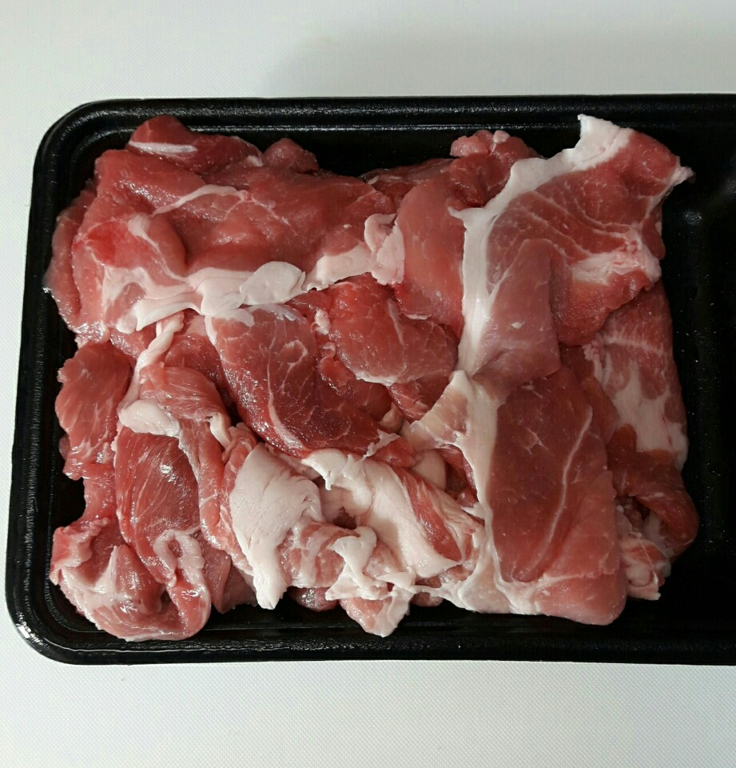
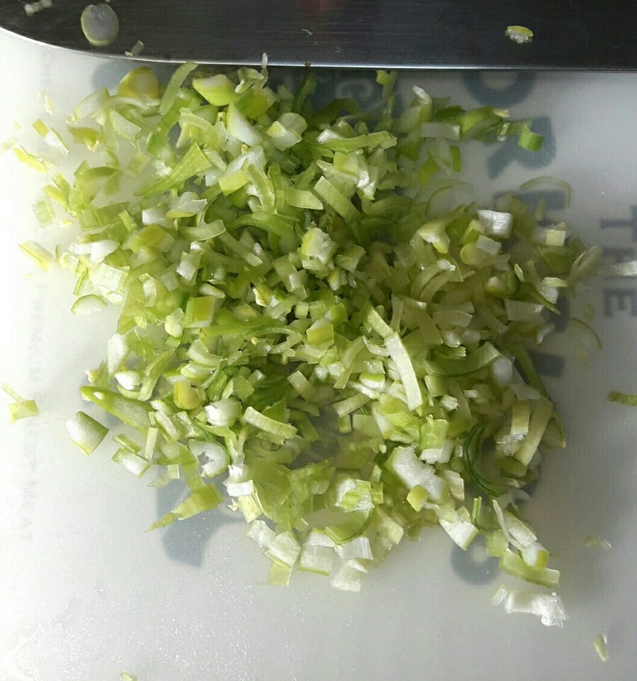
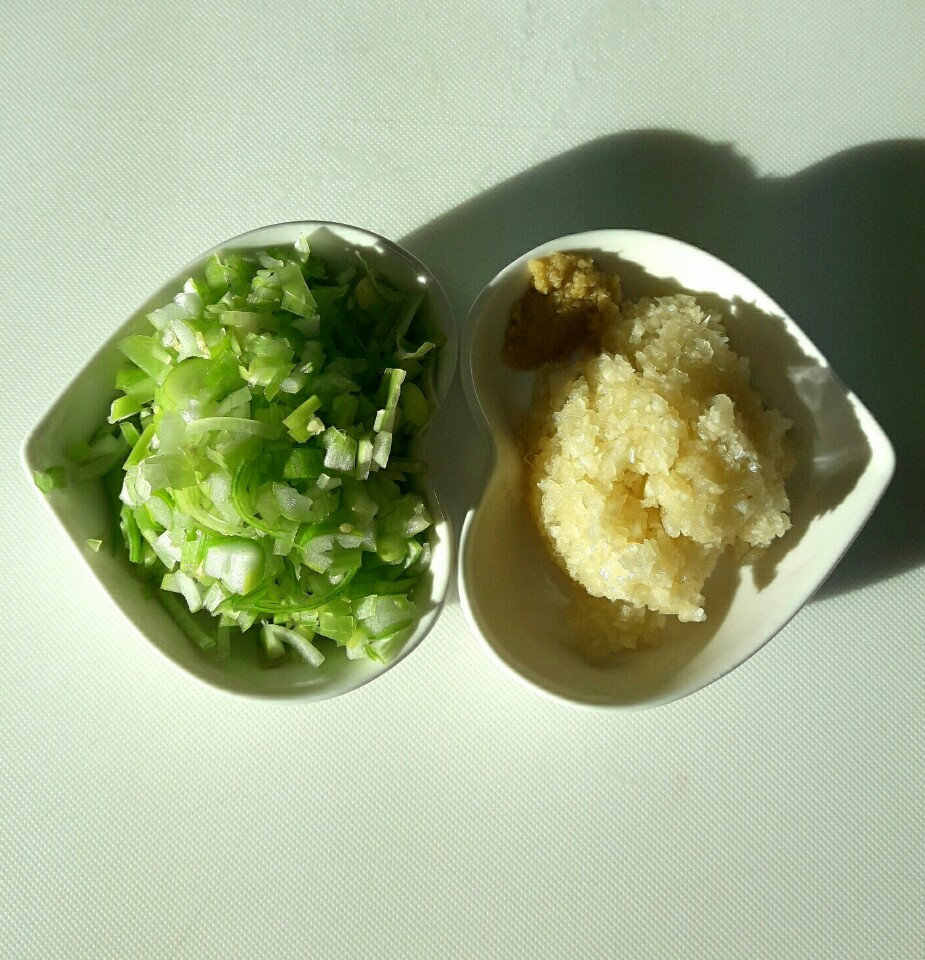
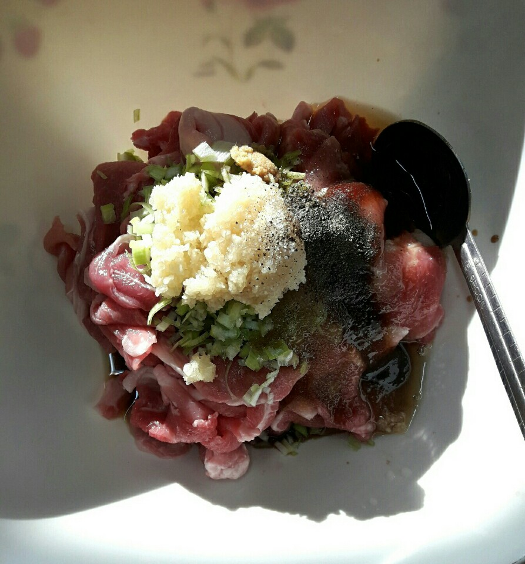
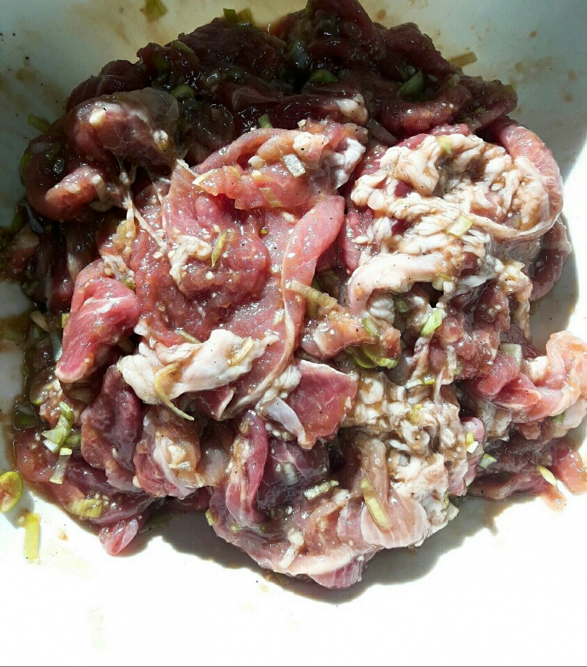
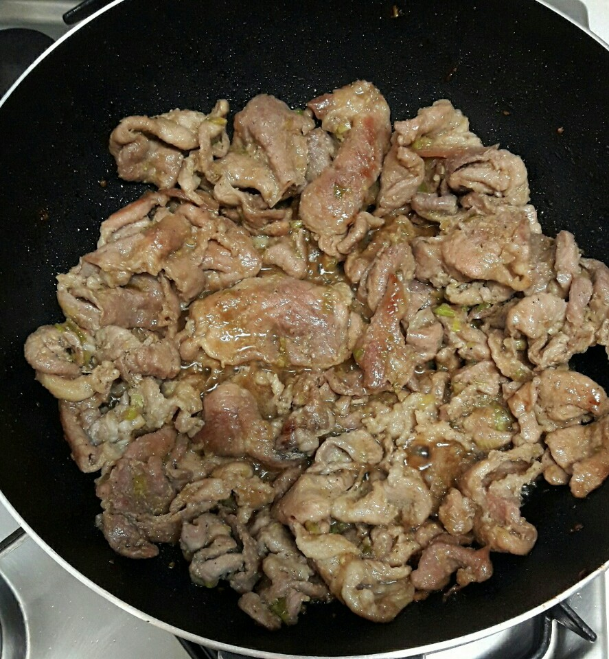
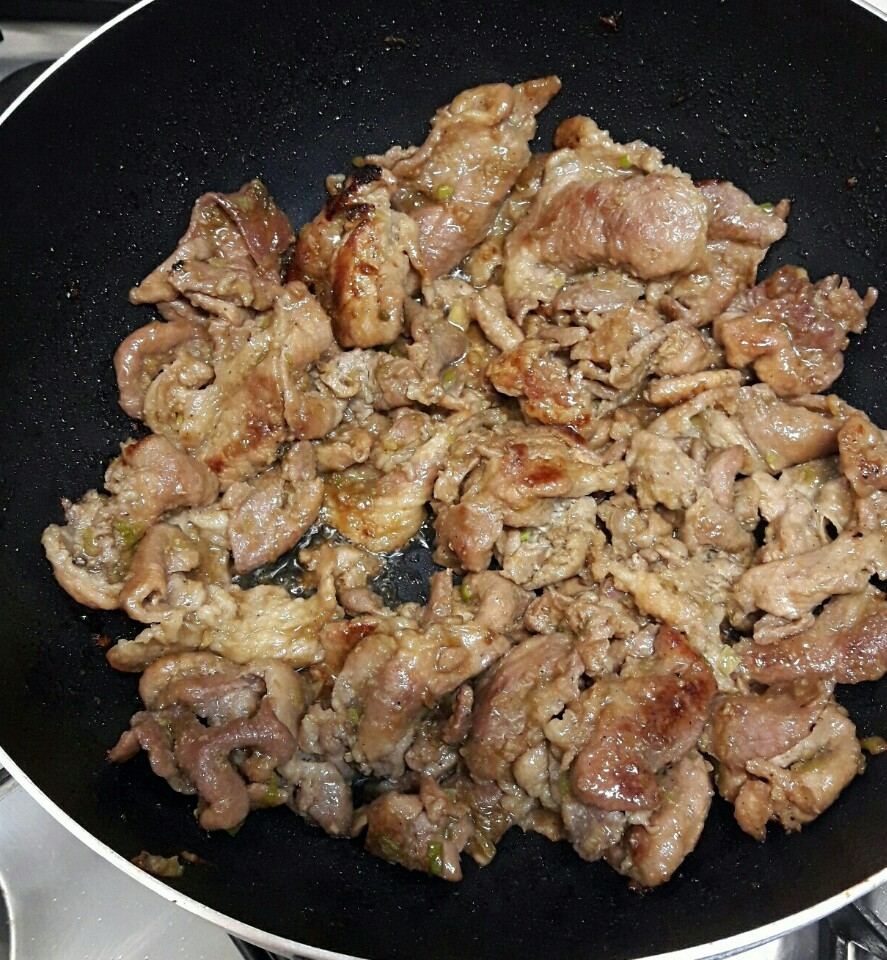
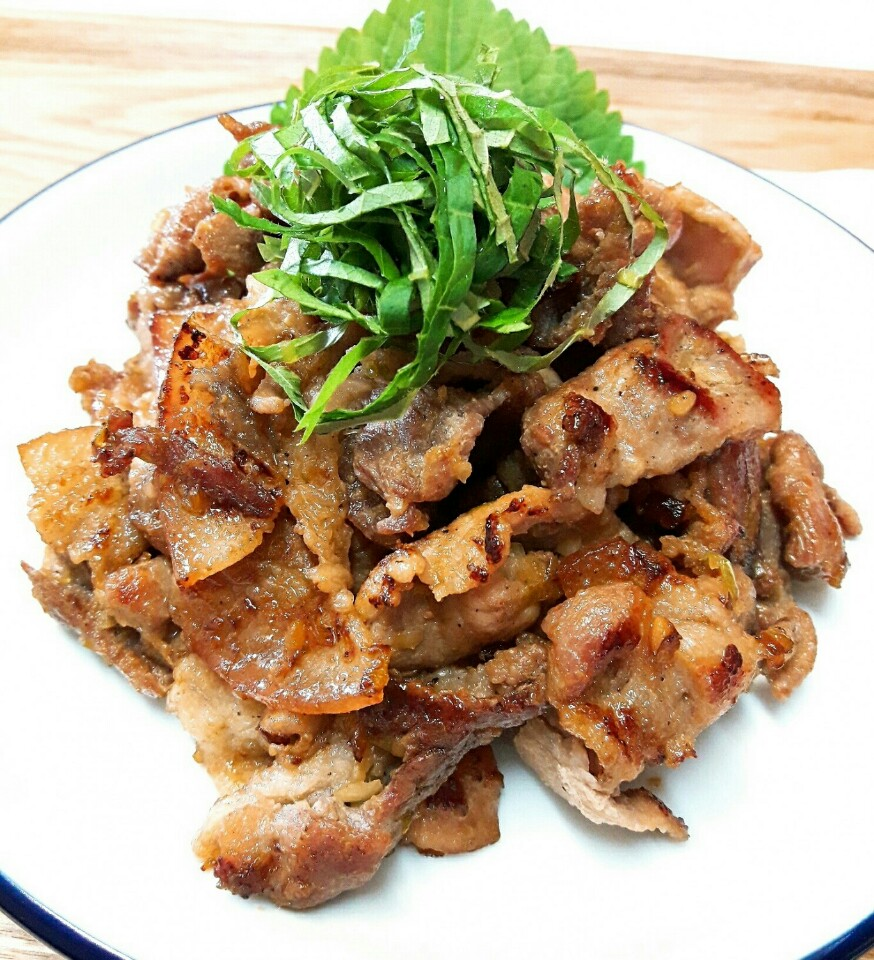

Ingredients
주 재료
- 돼지고기(앞다리살)400g
- 다진마늘1큰술
- 대파1/3대
- 대진생강약간
- 깻잎선택
양념
- 진간장4큰술
- 설탕1큰술
- 맛술1큰술
- 청주1큰술
- 참기름2큰술
- 후춧가루약간
Steps
- 지고기 앞다리살은 키친타월에 올려 핏물제거해 준비합니다

- 대파 줄기 부분은 곱게 다져주었어요

- 다진 마늘 다진 생강 약간을 준비해요

- 핏물 뺀 돼지고기는 볼에 담아 분량의 양념을 넣어주세요

- 조물조물 버무려 맛있는 양념이 배이도록 10분간 재웁니다

- 팬은 센불에서 뜨겁게 달군 다음 양념한 고기를 넣어 주세요

- 센불로 유지하고 볶아 주는데요 한 번 볶고 잠시 두었다 볶고 하면 노릇하게 맛있는 바싹 불고기가 돼요~불은 계속 센불로 합니다

- 깻잎은 돌돌말아 채썰어 올려주면 바싹 돼지불고기 완성~
